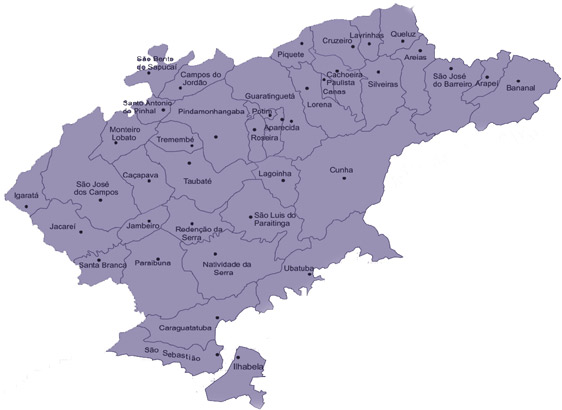

Contexto Geográfico
Localização Estratégica
O Vale do Paraíba é uma importante região localizada no sudeste do Brasil estendendo-se entre os estados de São Paulo e Rio de Janeiro. Seu nome vem do rio Paraíba do Sul, que atravessa a região de oeste a leste, servindo como elemento central para a formação dos municípios e da economia local ao longo dos séculos.
A região é delimitada por duas cadeias montanhosas importantes:
Serra da Mantiqueira
A Serra da Mantiqueira é uma das regiões mais belas do Vale do Paraíba, conhecida por suas paisagens montanhosas, clima ameno e rica biodiversidade. Com altitudes elevadas e vegetação exuberante, a serra é um importante destino turístico, além de abrigar nascentes de rios e áreas de preservação ambiental.
Serra do Mar
A Serra do Mar forma a fronteira leste do Vale do Paraíba e destaca-se por sua densa vegetação de Mata Atlântica, com relevo acidentado e vistas deslumbrantes. É uma região de grande importância ecológica e histórica, protegida por parques estaduais e reservas ambientais que ajudam a conservar sua fauna e flora únicas.
Essa posição estratégica transformou o Vale do Paraíba em um corredor natural de ligação entre o interior do Brasil e o litoral, especialmente entre as cidades de São Paulo e Rio de Janeiro, os dois principais centros econômicos do país.
Além disso, o solo fértil e o clima favorável favoreceram, no século XIX, o cultivo do café, tornando a região uma das mais ricas do Brasil durante o chamado Ciclo do Café. Atualmente, o vale abriga importantes polos industriais, tecnológicos e universidades, mantendo sua relevância no cenário nacional.
Mapa do Vale do Paraíba
Contexto Histórico
🌱 1800–1880 – Ciclo do Café e Escravidão
Durante o século XIX, especialmente entre 1800 e 1880, o Vale do Paraíba se tornou o principal polo cafeeiro do Brasil. A região reunia condições ideais para o cultivo do café: clima ameno, altitude adequada e solos férteis. Com isso, surgiram grandes fazendas de café, estruturadas em torno de uma economia agrária escravista.
Nesse período, o café não era apenas uma cultura agrícola: ele se tornou a base da economia nacional e a principal fonte de exportação do país. O Vale do Paraíba concentrava ricas propriedades rurais, muitas das quais comandadas por famílias poderosas que formavam a elite econômica e política da época.
A mão de obra era composta, majoritariamente, por escravizados africanos. Milhares de pessoas foram submetidas a condições desumanas de trabalho nas plantações e nas casas-grandes das fazendas. O trabalho escravo foi fundamental para o enriquecimento da região, mas também deixou profundas marcas sociais e culturais que ainda são sentidas.
A concentração de riqueza levou à construção de estradas, estações ferroviárias (como parte da Estrada de Ferro Dom Pedro II) e cidades planejadas, que se desenvolveram em torno da atividade cafeeira. Cidades como Guaratinguetá, Lorena, Pindamonhangaba e Taubaté ganharam importância nesse cenário.
Entretanto, por volta das décadas finais do século XIX, o modelo escravocrata e o esgotamento dos solos deram início à decadência do ciclo. A abolição da escravidão (1888) e a ascensão de novas áreas de produção de café, como o oeste paulista, marcaram o fim da supremacia do Vale do Paraíba como centro cafeeiro do Brasil.
🏙️ 1930-1950 – Crise do Café e Urbanização
Nas décadas de 1930 a 1950, o Vale do Paraíba enfrentou um período de declínio econômico, provocado pela crise do café. Esse processo teve início com a queda dos preços internacionais do produto durante a Grande Depressão de 1929, que afetou diretamente a economia brasileira, então fortemente dependente da exportação cafeeira.
O modelo agrário, sustentado por grandes latifúndios e práticas pouco sustentáveis, começou a mostrar sinais de esgotamento. Muitas fazendas entraram em falência, e a produção de café foi deslocada para outras regiões com maior produtividade, como o oeste do estado de São Paulo. O Vale do Paraíba, antes um centro de riqueza e poder político, passou por um processo de estagnação econômica.
Esse contexto impulsionou um movimento de migração interna, com trabalhadores rurais abandonando o campo em direção às cidades da região, em busca de novas oportunidades. Começou, então, um processo inicial de urbanização, ainda que tímido, marcado pelo crescimento dos núcleos urbanos e pela diversificação das atividades econômicas.
A crise do modelo agrário tradicional abriu espaço para a implantação de infraestruturas urbanas básicas, como estradas, escolas e serviços públicos, além de favorecer o surgimento de novas vocações econômicas, como o comércio e os pequenos serviços.
Esse período foi fundamental para preparar o terreno para a industrialização que viria a seguir, especialmente com a implantação de políticas de desenvolvimento nacional na era Vargas, que buscavam reduzir a dependência da economia agrícola e incentivar a modernização do país.
🏭 1950-1970 – Industrialização e Crescimento
Entre 1950 e 1970, o Vale do Paraíba passou por uma transformação radical: saiu da estagnação econômica herdada da crise do café e entrou de vez na era da industrialização. Esse processo foi fortemente impulsionado por políticas de desenvolvimento nacional, como o Plano de Metas do presidente Juscelino Kubitschek, que visava "cinquenta anos em cinco" de progresso.
A região começou a atrair indústrias de base, em especial nos setores automobilístico, aeroespacial, siderúrgico e militar. Cidades como São José dos Campos se destacaram com a implantação de instituições estratégicas, como:
Esse novo cenário promoveu um intenso êxodo rural, com a migração de populações do campo para as cidades em busca de emprego nas fábricas. Como resultado, houve uma aceleração da urbanização, crescimento das periferias e aumento da demanda por infraestrutura urbana — moradia, transporte, educação e saúde.
O período também marcou o surgimento de um novo perfil social: o operariado urbano, que passou a ter papel importante na organização de sindicatos e movimentos sociais, acompanhando o avanço da industrialização no Brasil como um todo.
🌐 1970–2025 – Diversificação, Tecnologia e Desenvolvimento Regional
A partir da década de 1970, o Vale do Paraíba consolidou sua transição de uma economia agrária para um centro urbano-industrial moderno, passando por fases importantes de diversificação econômica, crescimento urbano e desenvolvimento tecnológico.
Com o fortalecimento de polos industriais em cidades como São José dos Campos, Taubaté e Jacareí, a região passou a receber investimentos nacionais e internacionais. A Embraer, fundada em 1969, tornou-se uma das maiores fabricantes de aeronaves do mundo e símbolo da tecnologia de ponta brasileira. Ao lado dela, outras empresas dos setores automotivo, aeroespacial, farmacêutico, metalúrgico e logístico se instalaram ao longo do eixo da Via Dutra, rodovia que liga São Paulo ao Rio de Janeiro e cruza o Vale.
Na área acadêmica e científica, houve um crescimento expressivo. Além do ITA, surgiram universidades como a Unifesp (campus São José), Unitau e Univap, fortalecendo o vínculo entre educação, pesquisa e desenvolvimento tecnológico. A região também passou a abrigar parques tecnológicos e incubadoras de startups.
Do ponto de vista urbano, as cidades cresceram em ritmo acelerado. Condomínios, shoppings centers, centros empresariais e infraestrutura de mobilidade foram sendo construídos para acompanhar a nova realidade. No entanto, esse crescimento também trouxe desafios: problemas habitacionais, trânsito, poluição e desigualdades sociais passaram a fazer parte da paisagem urbana, exigindo novas políticas públicas e planejamento regional.
Nos anos 2000 e 2010, o Vale do Paraíba passou a investir fortemente em tecnologia da informação, sustentabilidade e qualificação da mão de obra, buscando manter-se competitivo diante da globalização e das transformações do século XXI. Em 2020, com os efeitos da pandemia, a região precisou adaptar-se rapidamente ao modelo digital e remoto, o que acelerou processos de inovação em setores como educação, saúde e comércio.
Hoje, em 2025, o Vale do Paraíba é uma região de destaque nacional, marcada pela integração entre indústria, ciência, inovação e qualidade de vida. É um exemplo de como uma região pode se reinventar historicamente, saindo de um modelo rural escravista para se tornar um dos principais centros de conhecimento e tecnologia do país.
Atualmente, o Vale do Paraíba abriga diversas empresas de grande porte que impulsionam a economia regional, geram milhares de empregos e contribuem para o desenvolvimento sustentável da região. Entre essas, destacam-se marcas nacionais e globais que são referência em inovação, tecnologia e qualidade.
Hoje, o Vale encara um novo ciclo: tecnologia, sustentabilidade e inovação A presença de instituições como o Instituto Tecnológico de Aeronáutica (ITA) e parques tecnológicos reforça o potencial da região para liderar essa nova era.
O futuro do Vale será moldado por sua capacidade de equilibrar desenvolvimento com qualidade de vida. Indústria 4.0, energias renováveis, startups e valorização do patrimônio cultural são apenas algumas das frentes que apontam para um futuro promissor.
Veja as últimas notícias das maiores empresas da região